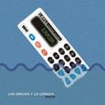

| Artist: | Las Orejas Y La Lengua |
| Title: | Error |
| Label: | Viajero Inmovil LOYLL009VIR |
| Length(s): | 52 minutes |
| Year(s) of release: | 2003 |
| Month of review: | [11/2003] |
| 1) | Euforico Tribilin | 3.15 |
| 2) | Suricata | 7.20 |
| 3) | Leandra | 3.17 |
| 4) | Norma | 4.00 |
| 5) | Veronica G. | 8.21 |
| 6) | Ahora Si, Chau | 1.54 |
| 7) | Hermanas Colgantes | 5.55 |
| 8) | Disposable Blood Oxigenator | 3.55 |
| 9) | La Autopsia De Sandoval | 6.59 |
| 10) | Cordoba, Oscar | 6.58 |
Suricata is not much different, although quite a bit longer. The flute is again quite mellow, while the Fender Rhodes adds dreaminess of its own. The drums are easy-going in the middle during this phase, but there are also some more fickly parts with fast repetitive runs. The music is dynamic, sometimes slipping beneath the level of what is audible. I really had to put my volume up when the was fiddling around in the second part of this track. The bass plays a strong role here, the piccolo and flute playing occasional high notes. The drums are also getting more and more noticed. Although the Cuneiform feel is again strong, there is something very Latin American about this outfit. The song works itself into a frenzy at the end.
Leandra is acoustic guitar with a strong North-American twang. Of course, this type of band will not be satisfied with just that. When the pace goes up, something akin buzzing bees come into play. Is that a violin? Or it is one of those instruments that I did not know. On Norma, we seem at first to be back at laid back stuff, until they scare the hell out of me when the music really starts. There is something of the American indie guitar bands here, of course a bit more experimental. Plenty of interesting samples as well. At some point the rhythm guitar starts to grind and power and tension go up.
Veronica G. is the longest track on this album. This is a slow building soft toned track with easy drums and acoustic guitar, keys setting in after three minutes or so. A beautiful piece of quiet. The feel is very much like modern film music. Later the flute also sets in, and the music mellows out again. At the end we also get some vocal effects.
Ahora Si, Chau is a short one opening with strumming acoustics after which samples take over and the acoustics may return. The sound is very open and friendly. What people are doing playing ping-pong here is a question left unanswered.
Hermanas Colgantes has repetitive, somewhat minimal piano playing at the beginning. There are some vocals vaguely in the back too. The melody is intricate and subtle, the band also uses a violin again (or something similar). Strong stuff. Plenty of organ and such here as well giving a kind of warm Happy The Man feel. Disposable Blood Oxigenator also has some warm organ and keyboard playing, introverted and subtle. In fact, this song shows the mellow side of the band, in the vein of Sinkadus. The flute also helps there.
The flute again figures prominently on the La Autopsia De Sandoval. Again the dark Sinkadus feel is present, with some subtle bass playing underneath. No grand bombastic mellotrons, in case you are looking for those. At the end the bands does derail a bit.
Closer is Cordoba, Oscar, which essentially features sampled voices against a guitar and bass dominated backdrop. This is Cuneiformish again. Later the band rocks loose again with harrowing material with plenty of distortion and dissonance.